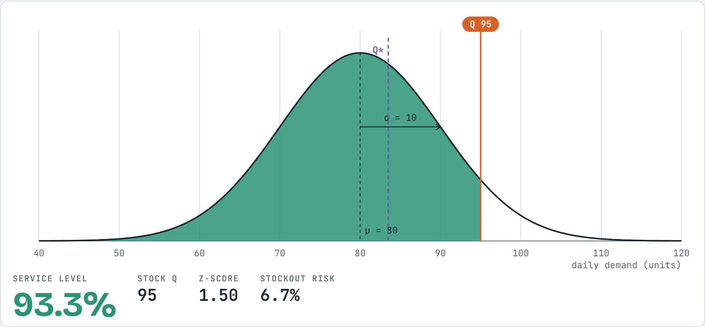
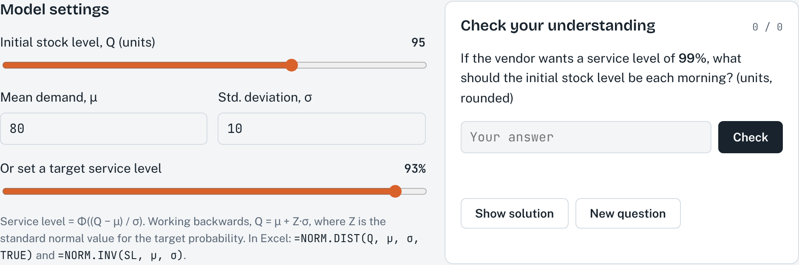
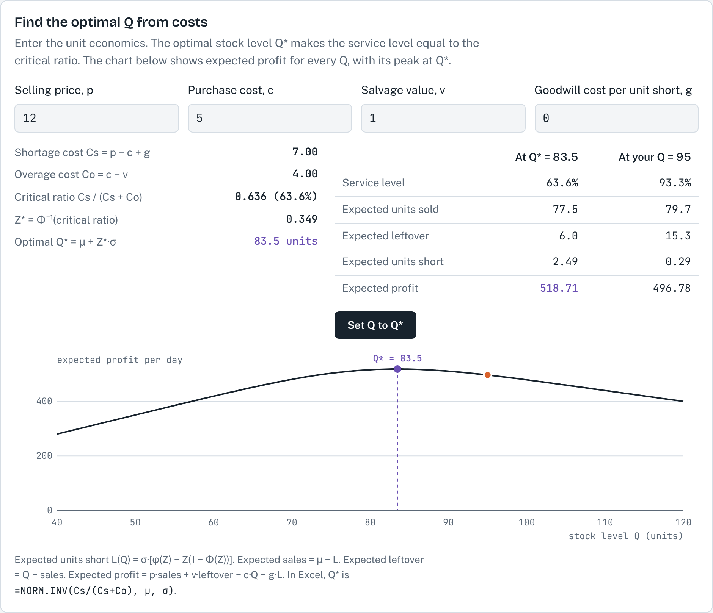

1About this simulation
Some products can only be sold for one short period: today's newspaper, fresh bread, flowers for a holiday, a fashion item for one season. The order must be placed before demand is known, there is no second chance to reorder, and what is left over at the end is sold cheaply or thrown away. If we stock too little, we lose sales; if we stock too much, we lose money on the leftovers. This is the single-period inventory model, often called the newsvendor problem.
This simulation shows the demand distribution of a vendor for one day. You choose the stock level Q and see the service level, the probability that demand does not exceed Q, as a shaded area under the curve. A cost section then finds the stock level that gives the highest expected profit.
After working through this guide, you should be able to:
- explain the single-period model and when it applies;
- calculate the service level and the stockout risk for a given stock level when demand is normally distributed;
- calculate the stock level needed for a target service level, and explain how demand uncertainty affects it;
- calculate the cost of shortage, the cost of overage and the optimal service level, and use them to find the optimal stock level Q*.
2Theory background
The single-period model
- Only one order is placed for the selling period, before demand is known.
- Units have little or no value at the end of the period. Leftover units are sold at a salvage value or discarded.
- Demand that cannot be met is lost; it is not backordered.
- The decision is a single number: the stock level Q.
Notation
The notation is the same as in the course formula sheet. In the simulation, demand is normally distributed.
| Symbol | Meaning |
|---|---|
| μ, σ | Mean and standard deviation of demand in the period (units) |
| Q, Q* | Stock level at the start of the period; optimal stock level |
| SL | Service level: probability that demand is less than or equal to Q |
| Z | Number of standard deviations above the mean, Z = (Q − μ) / σ |
| Φ(Z) | Area under the standard normal curve to the left of Z (from a normal table or Excel) |
| p, c, v | Selling price, purchase cost and salvage value per unit ($/unit) |
| g | Goodwill cost per unit short, if any ($/unit); zero by default |
| Cs, Co | Cost of shortage and cost of overage per unit ($/unit) |
Service level for a given stock level
The service level is the area under the demand curve to the left of Q. With normal demand, we first convert Q to a Z-value and then read the area from the normal table:
The term Z × σ is the safety stock: the stock held above average demand to protect against uncertainty. For the same service level, a larger σ requires more safety stock. In Excel, SL is =NORM.DIST(Q, μ, σ, TRUE) and Q is =NORM.INV(SL, μ, σ).
Worked example (default settings). μ = 80, σ = 10, Q = 95.
- Z = (95 − 80) / 10 = 1.50, so SL = Φ(1.50) = 93.3% and the stockout risk is 6.7%.
- For a target of 95%, Z = 1.645 and Q = 80 + 1.645 × 10 = 96.45, which rounds to 96 units.
Choosing the stock level from costs
A higher service level is not always better: every extra unit stocked is less likely to be sold. The best stock level balances two costs per unit:
The logic is marginal: stocking one more unit gains Cs if that unit is sold and loses Co if it is left over. It pays to add units until the probability of selling the next one has fallen to Co / (Cs + Co), which is the same as setting P(demand ≤ Q) = Cs / (Cs + Co). When Cs is large compared with Co, the optimal service level is high; when Co is larger than Cs, it is below 50% and Q* lies below the mean.
Worked example (default settings). μ = 80, σ = 10, p = $12, c = $5, v = $1, g = 0.
- Cs = 12 − 5 = $7 and Co = 5 − 1 = $4.
- SL = 7 / (7 + 4) = 0.636 (63.6%), so the stockout risk is 36.4%.
- Z for an area of 0.636 is 0.349, so Q* = 80 + 0.349 × 10 = 83.5 units.
Expected sales, leftovers and profit
The cost section of the simulation also shows what happens on average at a given Q. These formulas are an extension for learners who want to see where the numbers come from; the hand calculations in this course use the formulas in 2.3 and 2.4.
3How to use the simulation
Getting started
- Set the mean demand μ and the standard deviation σ in the Model settings. The defaults are μ = 80 and σ = 10.
- Choose the initial stock level Q with the slider, or use Or set a target service level to let the simulation find Q for a chosen service level. Q is rounded to whole units.
- In Find the optimal Q from costs, enter the selling price p, purchase cost c, salvage value v and, if you wish, a goodwill cost g. Set Q to Q* moves the stock level to the optimum (rounded to whole units).
- The Check your understanding box generates new practice questions on the service level and the stock level. Press Show solution to see the working.
What you see

- Curve: the normal demand distribution, with the mean μ (dashed line) and one standard deviation σ marked.
- Green area and orange line: your stock level Q and the service level P(demand ≤ Q). The unshaded area to the right is the stockout risk.
- Purple dashed line, Q*: the optimal stock level from the cost section.
- Readout: service level, stock Q, Z-value and stockout risk.


Try this
A. Service level and stock level
- With μ = 80 and σ = 10, set Q to 80, 90, 95, 100 and 110. Calculate Z and the service level by hand first, then complete the table below with the simulation.
- Each step of 10 units adds the same amount of stock. Does it add the same amount of service level? What does that mean for the cost of a very high service level?
| Q | Z | Service level | Stockout risk |
|---|---|---|---|
| 80 | |||
| 90 | |||
| 95 | |||
| 100 | |||
| 110 |
B. Target service level and uncertainty
- Use the target slider to find the stock level for 50%, 90%, 95% and 99%. Check each with Q = μ + Z × σ.
- Set Q = 95 and change σ from 10 to 20. What happens to the service level? Then use the target slider to restore about 93%. How much stock do you need now?
- Set σ = 5 with Q = 95. Explain the result in terms of safety stock.
C. The cost-optimal stock level
- Return to μ = 80, σ = 10 and the default costs. Calculate Cs, Co, the optimal service level and Q* by hand, and check them in the simulation.
- Compare the table columns for Q* and Q = 95. Which Q sells more, and which gives the higher expected profit? Why?
- Change one input at a time and record Q* in the table below. Return each input to its default before the next change.
| Change | Cs | Co | Optimal SL | Q* |
|---|---|---|---|---|
| Defaults | ||||
| Salvage value v = $4 | ||||
| Salvage value v = $0 | ||||
| Goodwill cost g = $3 | ||||
| Selling price p = $20 |
D. A newsstand
- A newsstand sells on average 120 newspapers a day, normally distributed with a standard deviation of 15. Each paper costs $0.70 and sells for $1.25, and the publisher gives a $0.30 credit for each unsold paper. Set μ, σ, p, c and v accordingly. How many papers should be ordered each day, and what is the stockout risk?
4Check your understanding
- Daily demand is normal with μ = 200 and σ = 40. What stock level gives a 90% service level?
- With the same demand, a shop stocks 180 units. What are the service level and the stockout risk?
- A bakery sells croissants for $4.00. Each costs $1.50 to make, and leftovers are sold to a café for $0.50 at the end of the day. Demand is normal with μ = 150 and σ = 20. Find Cs, Co, the optimal service level and Q*.
- The bakery decides that every unhappy customer also costs $1.00 in lost goodwill. How do Cs and Q* change?
- A product sells for $6, costs $5 and has a salvage value of $1. Demand is normal with μ = 200 and σ = 40. Find Q*. Why is it below the mean demand?
- Explain in two or three sentences why the optimal service level in the single-period model is usually not 99%.
References
MSB255 Supply Chain and Operations Management: course materials. University of Stavanger.
Cachon, G., & Terwiesch, C. (2019). Matching Supply with Demand: An Introduction to Operations Management (4th ed.). McGraw-Hill Education.
Heizer, J., Render, B., & Munson, C. (2017). Operations Management: Sustainability and Supply Chain Management (12th ed.). Pearson.
Answers and expected resultsTry the exercises first, then open to check
Simulation results
| Run | Result |
|---|---|
| A. Q = 80 / 90 / 95 / 100 / 110 | Z = 0 / 1.00 / 1.50 / 2.00 / 3.00; SL = 50.0% / 84.1% / 93.3% / 97.7% / 99.9%; stockout risk = 50.0% / 15.9% / 6.7% / 2.3% / 0.1% |
| A. Diminishing returns | The first 10 units above the mean add 34 percentage points, the next 10 add 14, and 100 to 110 adds only 2. Very high service levels need a lot of extra stock. |
| B. Target 50 / 90 / 95 / 99% | Q = 80 / 93 / 96 / 103 (the simulation shows the actual SL of the rounded Q, e.g. 90.3% at Q = 93) |
| B. σ = 20, Q = 95 | Z = 0.75, SL falls to 77.3%. Restoring about 93% needs Q = 110 (safety stock 30 instead of 15). |
| B. σ = 5, Q = 95 | Z = 3.00, SL = 99.9%: with less uncertainty, the same 15 units of safety stock protect much more. |
| C. Defaults | Cs = $7, Co = $4, SL = 0.636, Z = 0.349, Q* = 83.5 |
| C. Q* vs Q = 95 | Q = 95 sells a little more (79.7 vs 77.5) but leaves 15.3 units over instead of 6.0; expected profit $496.78 vs $518.71 at Q*. |
| C. v = $4 | Co = $1, SL = 0.875, Q* = 91.5 |
| C. v = $0 | Co = $5, SL = 0.583, Q* = 82.1 |
| C. g = $3 | Cs = $10, SL = 0.714, Q* = 85.7 |
| C. p = $20 | Cs = $15, SL = 0.789, Q* = 88.0 |
| D. Newsstand | Cs = $0.55, Co = $0.40, SL = 0.579, Z = 0.199, Q* = 120 + 0.199 × 15 = 123 papers; stockout risk 42.1% |
Check your understanding
- Z for 90% = 1.28, so Q = 200 + 1.28 × 40 = 251.2, about 251 units.
- Z = (180 − 200) / 40 = −0.50, so SL = Φ(−0.50) = 30.9% and the stockout risk is 69.1%.
- Cs = 4.00 − 1.50 = $2.50; Co = 1.50 − 0.50 = $1.00; SL = 2.50 / 3.50 = 0.714; Z ≈ 0.57; Q* = 150 + 0.57 × 20 ≈ 161 croissants.
- Cs = 2.50 + 1.00 = $3.50; SL = 3.50 / 4.50 = 0.778; Z ≈ 0.76; Q* = 150 + 0.76 × 20 ≈ 165 croissants. A higher shortage cost raises the optimal stock.
- Cs = 6 − 5 = $1; Co = 5 − 1 = $4; SL = 1 / 5 = 0.20; Z ≈ −0.84; Q* = 200 − 0.84 × 40 ≈ 166 units. An unsold unit loses four times as much as a lost sale, so it pays to stock below the mean and accept a stockout risk of 80%.
- Each extra unit only adds a little service level but is increasingly likely to be left over. The best service level is where the expected gain from one more unit equals its expected loss, Cs / (Cs + Co), which is 99% only if the cost of shortage is about 99 times the cost of overage.